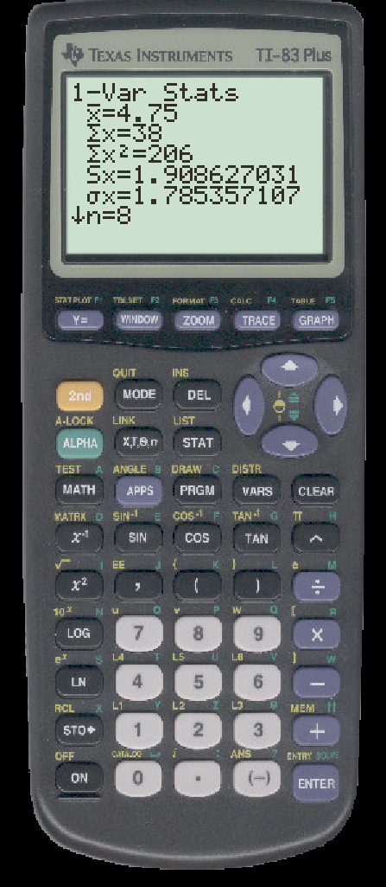

TO CALCULATE SUMMARY STATISTICS ON THE TI
- Enter your data in a list. We will use L1.
- Press STAT, then the rightarrow $\rightarrow$. You should see

- Press ENTER to select ``1-Var Stats''

- If you entered your data into a list other than L1, type the name of the list now.
- Press ENTER. You will see:

- By scrolling with the arrow, you will find
- X = mean
- Σ x = sum of values
- Σ x^2 = sum of squares of values
- Sx = standard deviation for a sample
- σ x = standard deviation for a population
- n = number of data values
- minX = minimum value
- Q1 = first quartile
- Med = median
- Q3 = third quartile
- maxX = maximum value